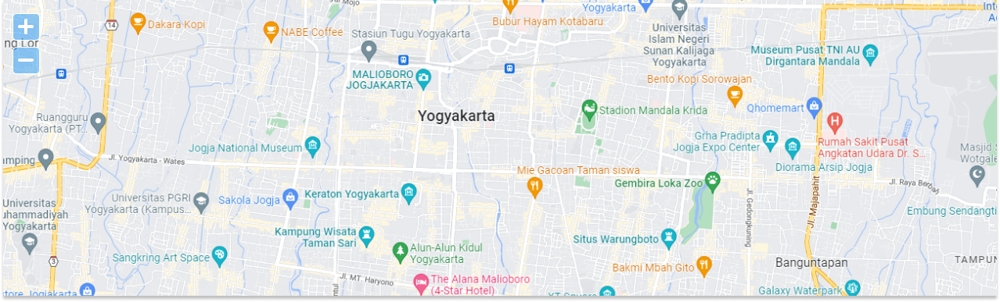

<h1 mat-dialog-title>Tambah/Edit Pengajian</h1>

<div mat-dialog-content>

  <mat-form-field class="uk-width-1-1" appearance="fill">
    <mat-label>Nama Pengajian</mat-label>
    <input matInput required>
  </mat-form-field>

  <mat-form-field class="uk-width-1-1" appearance="fill">
    <mat-label>Nama Pembicara</mat-label>
    <input matInput required>
  </mat-form-field>

  <mat-form-field class="uk-width-1-1" appearance="fill">
    <mat-label>Deskripsi</mat-label>
    <textarea matInput required></textarea>
  </mat-form-field>

  <div class="uk-grid-column-small uk-grid-row-small uk-child-width-1-2@s" uk-grid>
    <mat-form-field appearance="fill">
      <mat-label>Tanggal Pengajian</mat-label>
      <input matInput [matDatepicker]="picker">
      <mat-datepicker-toggle matSuffix [for]="picker"></mat-datepicker-toggle>
      <mat-datepicker #picker></mat-datepicker>
    </mat-form-field>

    <mat-form-field appearance="fill">
      <mat-label>Jam Pengajian</mat-label>
      <input matTimepicker>
      <mat-icon matSuffix >alarm</mat-icon>
    </mat-form-field>
  </div>

  <mat-form-field class="uk-width-1-1" appearance="fill">
    <mat-label>Penyelenggara</mat-label>
    <mat-select>
      <mat-option *ngFor="let p of penyelenggara" [value]="p">{{p}}</mat-option>
    </mat-select>
  </mat-form-field>

  <!-- Jika Cabang terpilih -->
  <mat-form-field class="uk-width-1-1" appearance="fill">
    <mat-label>Cabang</mat-label>
    <mat-select>
      <mat-option>Cabang tegal</mat-option>
    </mat-select>
  </mat-form-field>

  <!-- Jika Ranting terpilih -->
  <mat-form-field class="uk-width-1-1" appearance="fill">
    <mat-label>Ranting</mat-label>
    <mat-select>
      <mat-option>Ranting Adiwerna</mat-option>
    </mat-select>
  </mat-form-field>

  <!-- Jika lainnya terpilih -->
  <mat-form-field class="uk-width-1-1" appearance="fill">
    <mat-label>Nama Penyelenggara</mat-label>
    <input matInput required>
  </mat-form-field>

  <mat-form-field class="uk-width-1-1" appearance="fill">
    <mat-label>Live Streaming</mat-label>
    <input matInput required placeholder="Masukan url/link streaming">
  </mat-form-field>

  <mat-form-field class="uk-width-1-1" appearance="fill">
    <mat-label>Alamat Lengkap</mat-label>
    <textarea matInput required></textarea>
  </mat-form-field>

  <mat-form-field class="uk-width-1-1" appearance="fill">
    <mat-label>Lokasi Sesuai Peta</mat-label>
    <input matInput disabled>
  </mat-form-field>

  


</div>

<mat-dialog-actions align="end">
  <button mat-button mat-dialog-close>Cancel</button>
  <button mat-flat-button [mat-dialog-close]="true" color="primary">Simpan</button>
</mat-dialog-actions>
